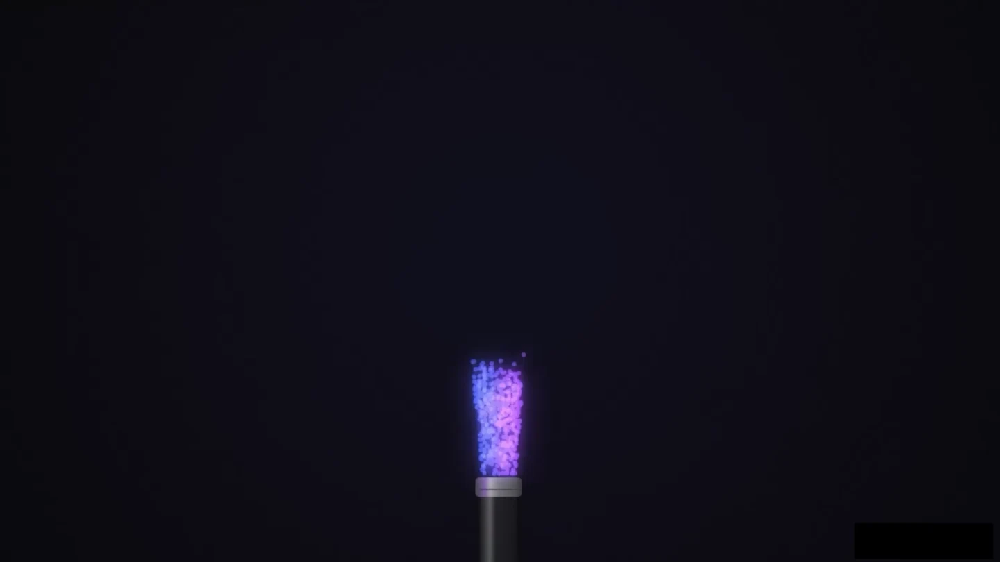
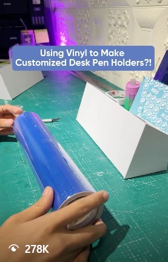
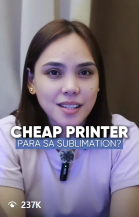
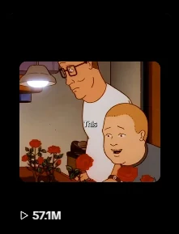
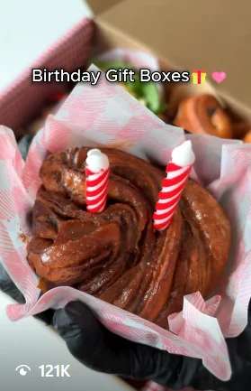
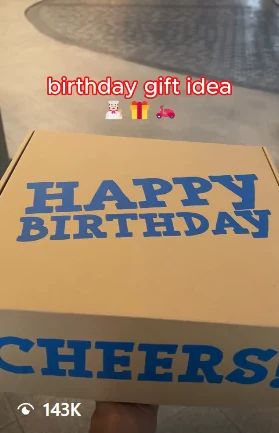
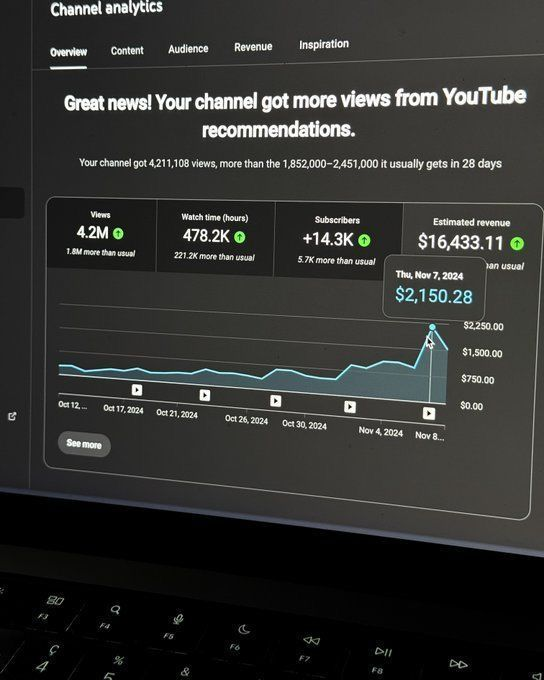
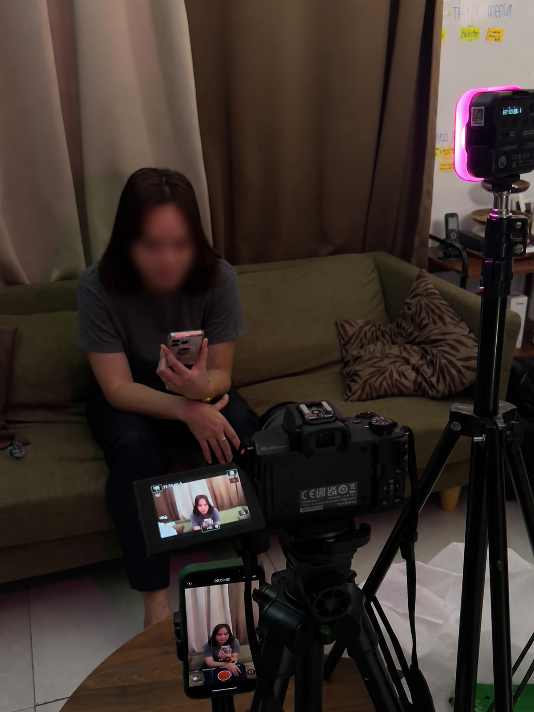
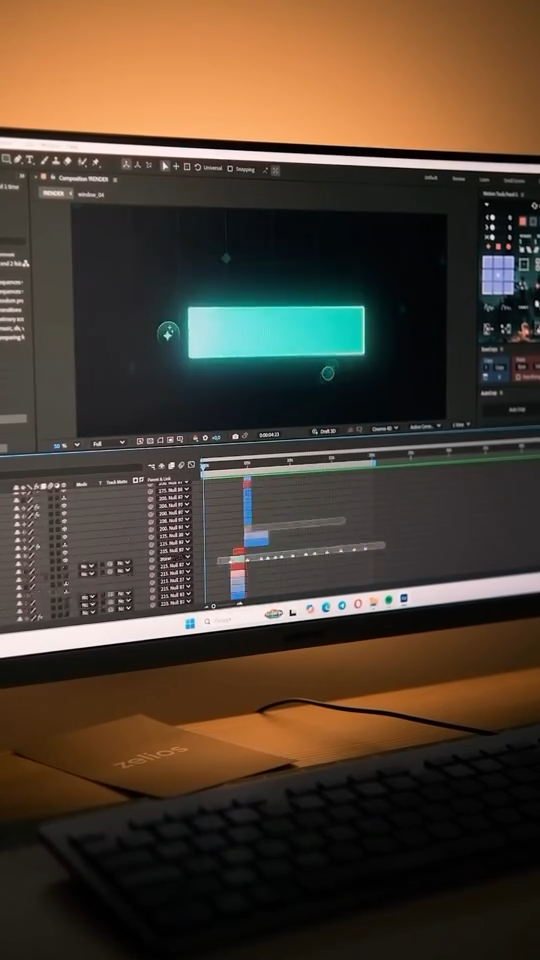

57M+
Views on one personal TikTok edit
Personal account · @nvenm_edit

Video Editor · Videographer · Social Media Content Marketing Specialist
Reels, podcasts, brand videos,
and content systems.
I handle the full pipeline for short-form and long-form content, from research and scripting to shooting, editing, approvals, and publishing.
Tools I work with
Selected Work
Widescreen
A short portfolio intro.
Selected highlights
57M+
Personal account · @nvenm_edit
1M+
Agency client work
20K+
Same TikTok video · Personal account


Selected client content · RetailContent strategy / Production
I built Reels-first strategies that took new client accounts from almost no following into the thousands in under two months.
My role covered research, scripting, shot lists, shoots, editing, client approvals, and publishing.
See the video work
Personal account · @nvenm_editPersonal work / Video editing
A personal TikTok edit reached 57M+ views and brought in 20K+ followers from that video.
This is a personal-account result, separate from the client view totals above.
Visit my TikTok

Range / Client work
Agency and direct-client work across retail, food, clothing, health, aesthetics, automotive, and real estate.
Projects include social videos, website montages, motion graphics, SaaS explainers, and documentary-style edits.
Talk about a project
About me
I’m Ven, a video editor, videographer, and social media content marketing specialist based in Cainta, Rizal. I work on reels, podcasts, explainers, and brand content, handling the process from research and scripting to shooting, editing, approvals, and publishing.
I’ve worked with agencies and direct clients across food, retail, health, aesthetics, automotive, real estate, and other content-driven brands. My focus is building content that fits the platform, communicates clearly, and performs.
How I work



Research the audience, platform, and references. Build the script and shot list around what the content needs to communicate.
Research · Scriptwriting · Shot listsShoot on location or work with supplied footage. Shape the story through the edit, sound, captions, and motion graphics.
Videography · Editing · MotionWork through client feedback and approvals. Prepare platform-ready versions and handle publishing when it’s part of the project.
Feedback · Approvals · PublishingWhat I do
Short-form and long-form edits, podcast clips, motion graphics, explainers, and montage work.
On-location shooting, shot planning, and footage for social and brand content.
Research, scripts, shot lists, and content direction from the first idea through publishing.
Tools I use
Used across editing, production planning, and delivery.

Let’s work together
Send me the brief, a reference,
or what you’re hiring for.